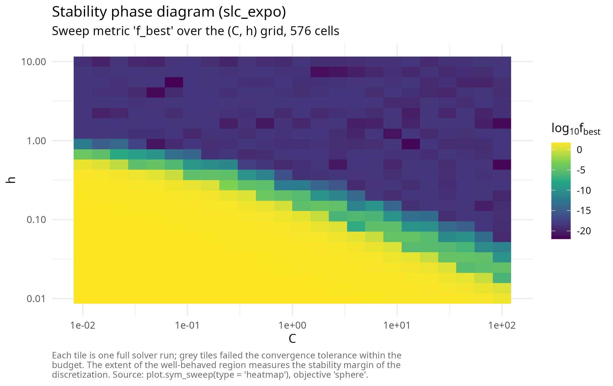
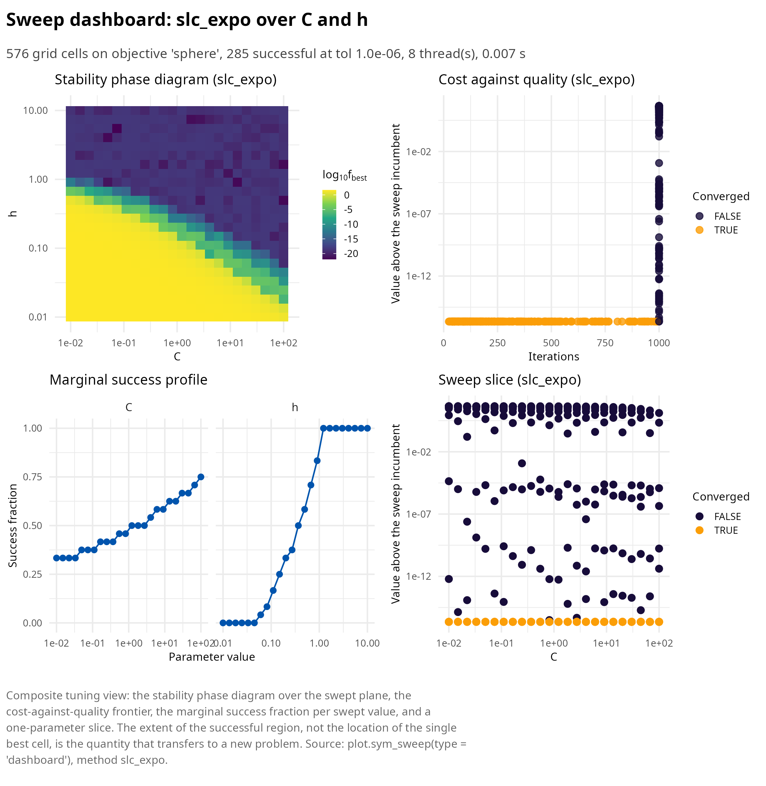

Bregman dynamics: restarting, temporal looping and the (C, h) plane
Pablo Almaraz, RElab
Source:vignettes/articles/bregman-dynamics.Rmd
bregman-dynamics.RmdThis article develops family B of symplectoR: solvers integrating the time-dependent Bregman Hamiltonian of the variational framework of accelerated optimization [1], in the fully explicit, safeguarded form of Duruisseaux and Leok [2], with the extended-phase-space construction of Betancourt, Jordan and Wilson [3] available as a diagnostic.
The Bregman Hamiltonian and its two canonical subfamilies
The Euclidean Bregman Hamiltonian is
\[H(q, r, t) = \tfrac12 e^{\alpha_t - \gamma_t} \|r\|^2 + e^{\alpha_t + \beta_t + \gamma_t} f(q),\]
whose flow, under the ideal scaling conditions \(\dot\beta_t \le e^{\alpha_t}\) and \(\dot\gamma_t = e^{\alpha_t}\), converges at
the rate \(f(q(t)) - f^* =
O(e^{-\beta_t})\). The polynomial subfamily (\(\alpha = \log p - \log t\), \(\beta = p \log t + \log C\), \(\gamma = p \log t\)) yields \(O(1/t^p)\) and contains the continuous
limit of Nesterov’s method at \(p =
2\), \(C = 1/4\); the
exponential subfamily yields \(O(e^{-\eta
t})\). Naive explicit discretization of these flows is provably
unstable, and the historical resolution was Nesterov’s three-sequence
scheme; the geometric resolution is symplectic integration in fictive
time on the Poincare-transformed extended phase space, which is what the
slc_poly and slc_expo kernels implement as
fully explicit symmetric leapfrog compositions costing one gradient per
iteration.
The two safeguards are not optional
The source study’s decisive practical findings both concern failure modes of the raw integrators, and both fixes ship enabled by default.
Momentum restarting resets the momentum to zero whenever the gradient
opposes the last displacement, \(\nabla
f(q)^\top \Delta q > 0\). The package reproduces the dramatic
effect on the 10-dimensional Rosenbrock function: with restarting,
slc_expo reaches 4.0e-17 in 550 iterations;
without it, 3.2e-5 after the full 5000-iteration budget, a
gap of twelve orders of magnitude at fixed cost.
Temporal looping addresses a subtler pathology: the Hamiltonian
coefficients \(e^{\eta t}\) and \(t^{2p - 1}\) grow without bound, and once
the gradient has decayed to machine precision the growing coefficient
re-inflates the roundoff floor and expels the iterate from the
minimizer. This is invisible when stopping on a tolerance and fatal on
fixed iteration budgets. The package’s regression test reproduces the
published pathology exactly: on a conditioned quadratic with a
20000-iteration budget, the unguarded run reaches 1e-4 and
then diverges to infinity, while the guarded run (which rolls the time
variable back whenever the instability criterion of the source paper
fires) holds 1.0e-30 at the end of the same budget.
library(symplectoR)
bm <- sym_benchmark("quadratic", d = 10, kappa = 100, seed = 4)
obj <- sym_objective(bm)
with_loop <- sym_optim(obj, rep(3, 10), method = "slc_expo",
control = sym_control("slc_expo", temporal_loop = TRUE,
max_iter = 20000, tol_grad = 0))
without_loop <- sym_optim(obj, rep(3, 10), method = "slc_expo",
control = sym_control("slc_expo", temporal_loop = FALSE,
max_iter = 20000, tol_grad = 0))
c(with = with_loop$f_final, without = without_loop$f_final)
#> with without
#> 1.034774e-30 InfTuning lives in the (C, h) plane
The source study’s tuning conclusion is a large simplification for
practice: fixing the family order at p = 6 or
eta = 0.01 costs little, and the only pair worth tuning is
(C, h). Small C damps the oscillatory
perturbation of the underlying monotone flow and thereby admits much
larger steps; and the convergent region of the plane is nearly
independent of the problem dimension, so a sweep on a small analogue
transfers to the production problem. sym_sweep() maps the
plane in one call, in parallel for compiled objectives.
co <- sym_compile("return 0.5 * arma::dot(x, x);", "return x;")
objc <- sym_objective(co, dim = 10, name = "sphere")
sw <- sym_sweep(objc, "slc_expo",
grid = list(C = 10^seq(-2, 2, length.out = 24),
h = 10^seq(-2, 1, length.out = 24)),
x0 = rep(3, 10), n_threads = 8,
control = sym_control("slc_expo", max_iter = 1000, tol_grad = 1e-9))
plot(sw, type = "heatmap")
summary(sw)
#> ¡ symplectoR sweep (slc_expo over C, h)
#> ⚙ Objective: sphere; grid size 576
#> ✔ Converged: 285; diverged: 0; success at tol 1.0e-06: 285
#> ✔ Incumbent cell: C = 0.07406, h = 5.484 with f = 1.09484e-22 in 181 iterations
#> ⏱ Threads: 8; wall time: 0.007 s
#> ✔ Successful C range: [0.01, 100] over 24 of 24 values
#> ✔ Successful h range: [0.06062, 10] over 18 of 24 valuesThe dashboard adds the three views that turn a phase diagram into a tuning decision: the cost-against-quality frontier, the marginal success fraction per swept value, and a one-parameter slice.
plot(sw, type = "dashboard")
The rate-matching scheme and its certificate
For completeness the package ships the p = 2 three-sequence
discretization of [1] as method
"wibisono": with \(\varepsilon =
1/L\), \(N > 1\) and \(C \le 1/(8N)\) it carries the explicit
certificate \(f(y_k) - f^* \le \|x_0 - x^*\|^2
/ (\varepsilon C k (k + 1))\). The package’s test evaluates the
bound at every recorded iterate of a conditioned quadratic and observes
zero violations over 1990 points, with the final gap
6.0e-10 against a bound of 1.6e-2; requesting
a C above the bound triggers a warning rather than silent
degradation. The higher-order members of the family (\(p = 3\) accelerated cubic-regularized
Newton and the uniform-convexity restart schemes) require Hessians and
inner subproblem solves and are deliberately not implemented in this
release; their theory is summarized in the source paper.
The extended-Hamiltonian monitor (control flag
diagnostics = TRUE) integrates the conjugate-energy
variable of the Poincare extension alongside the flow, so that \(H + \mathfrak r\) is conserved by the exact
extended dynamics and its drift is a per-run step-size health check, the
practical distillate of the extended-phase-space construction of [3]; it costs one extra objective evaluation per
iteration and is off by default.
References
[1] Wibisono, A., Wilson, A. C., & Jordan, M. I. (2016). A variational perspective on accelerated methods in optimization. Proceedings of the National Academy of Sciences, 113(47), E7351-E7358. https://doi.org/10.1073/pnas.1614734113
[2] Duruisseaux, V., & Leok, M. (2023). Practical perspectives on symplectic accelerated optimization. Optimization Methods and Software, 38(6), 1230-1268. https://doi.org/10.1080/10556788.2023.2214837
[3] Betancourt, M., Jordan, M. I., & Wilson, A. C. (2018). On symplectic optimization. arXiv preprint arXiv:1802.03653. https://doi.org/10.48550/arXiv.1802.03653